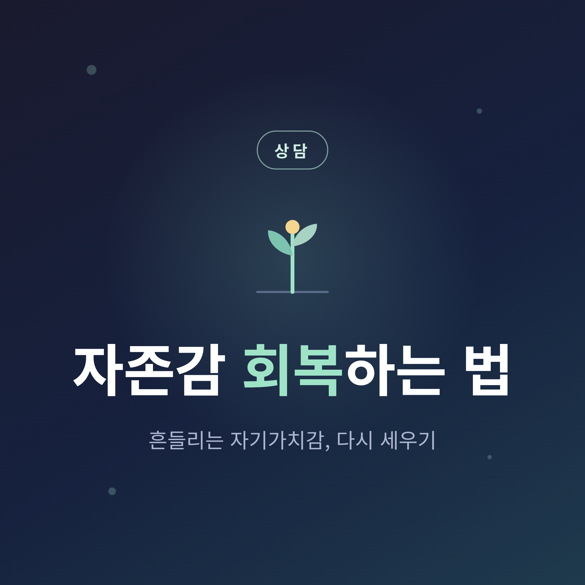
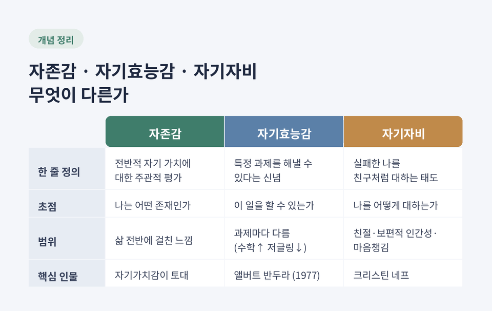
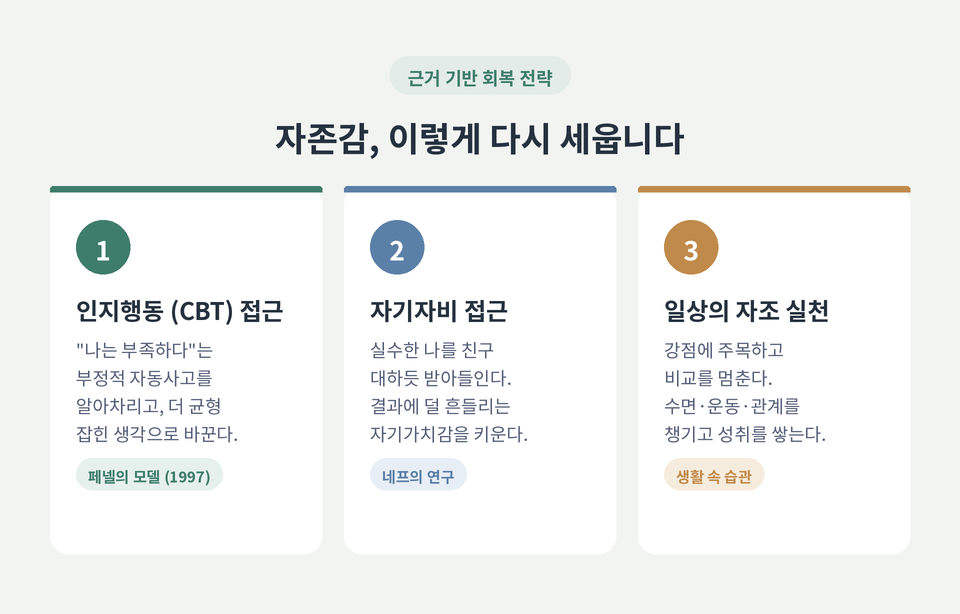

자존감 회복은 타고난 성격을 뜯어고치는 일이 아닙니다. 심리학 연구에 따르면 자존감은 생애에 걸쳐 변하는, 회복하고 키울 수 있는 대상입니다. 이번 글에서는 자존감의 정확한 의미부터 낮아지는 이유, 그리고 근거 기반의 회복 전략까지 차분히 정리해 보겠습니다.
먼저 핵심부터 말씀드립니다. 자존감은 성공과 실패에 따라 출렁이지만, 그 아래에는 "성취와 무관하게 나는 가치 있다"는 자기가치감이 있습니다. 회복의 열쇠는 바로 이 토대를 다시 세우는 데 있습니다.
용어부터 정리하는 편이 좋겠습니다. 셋은 자주 뒤섞여 쓰이지만 가리키는 대상이 다릅니다.
자존감(self-esteem)은 자신의 가치에 대한 전반적이고 주관적인 평가입니다. 자부심이나 수치심 같은 정서까지 포함하는 폭넓은 개념입니다.
그 핵심 토대가 자기가치감(self-worth)입니다. "나는 어떤 존재인가"에 대한 판단이며, 외부 인정과 무관하게 나는 가치 있다는 믿음에 가깝습니다.
자기효능감(self-efficacy)은 결이 다릅니다. 특정 과제에서 "내가 해낼 수 있다"는 구체적 신념입니다. 심리학자 앨버트 반두라가 1977년 제시한 개념으로, 과제마다 달라질 수 있습니다. 수학에는 높고 저글링에는 낮을 수 있는 셈입니다.
자기자비(self-compassion)는 실패의 순간에 자신을 가혹하게 비난하는 대신 소중한 친구를 대하듯 따뜻하게 받아들이는 태도입니다. 크리스틴 네프가 체계화했고, 자기 친절·보편적 인간성·마음챙김의 세 요소로 이루어집니다.
정리하면 이렇습니다. 자존감은 전반적 자기 가치, 자기효능감은 특정 과제의 자신감, 자기자비는 나를 대하는 태도입니다.

낮은 자존감을 가진 사람은 대체로 자기 자신에게 불만족하거나 불행하다고 느낍니다. 흔한 신호는 이렇습니다.
원인은 하나로 좁혀지지 않습니다. "낮은 자존감에는 단 하나의 근본 원인이 없다"는 것이 공통된 설명입니다. 어린 시절 중요한 사람에게서 비판적 메시지를 듣거나 그렇게 해석한 경험, 트라우마와 상실, 학대가 있는 관계, 사별이나 실업 같은 스트레스 사건과 만성 질환이 두루 영향을 줍니다.
여기서 한 가지 안심할 만한 사실이 있습니다. 33만여 표본, 약 16만 명을 분석한 대규모 연구는 자존감이 고정된 것이 아니라고 말합니다. 자존감은 30세까지 강하게 오르고 60세 무렵 정점에 이른 뒤 완만히 내려갑니다. 이 패턴은 성별과 국가를 가리지 않고 일관됐습니다. 지금 낮다고 해서 끝이 아니라는 뜻입니다.
자존감과 우울의 관계를 설명하는 대표 이론이 취약성 모델입니다. 낮은 자존감이 우울의 위험 요인으로 작용한다는 입장입니다.
종단 연구들은 낮은 자존감이 이후의 우울 수준을 예측하는 쪽에 더 무게를 실어 왔습니다. 그 효과는 성별·연령·민족을 넘어 비교적 견고하게 재현됐습니다.
다만 한계도 짚어야 합니다. 일부 연구는 신경증성 같은 제3의 변인을 통제하면 그 연관이 약해질 수 있다고 반박합니다. 인과의 방향을 단정하기는 이릅니다. 그래서 "낮은 자존감과 우울·불안은 밀접히 관련되며, 낮은 자존감이 위험 요인이 될 수 있다" 정도로 신중히 이해하는 편이 정확합니다.
영국의 정신건강 기관 Mind 역시 "낮은 자존감 자체는 정신건강 문제가 아니지만 서로 밀접히 연결된다"고 설명합니다. 우울과 불안이 자존감을 낮추고, 오래된 낮은 자존감이 다시 우울과 불안으로 이어지는 양방향의 관계라는 것입니다.
이제 가장 중요한 부분입니다. 어떻게 회복하느냐입니다.
첫째, 인지행동치료(CBT) 접근입니다. 멜라니 페넬은 1997년 낮은 자존감의 인지행동 모델을 만들었고, 이는 지금도 주요 모델로 쓰입니다. 핵심 작업은 "나는 부족하다" 같은 부정적 자동사고와 핵심 신념을 알아차리고, 그 증거를 따져 본 뒤, 보다 균형 잡힌 생각으로 바꾸는 것입니다. 페넬의 프로토콜을 따른 CBT가 낮은 자존감과 동반 증상을 유의하게 줄였다는 무작위 대조시험 보고가 있습니다.
둘째, 자기자비 접근입니다. 네프의 연구는 자기자비가 자존감과 비슷한 정신건강의 이점을 주면서도 자기방어의 위험은 없다고 봅니다. 특정 결과에 덜 좌우되는 더 안정적인 자기가치감, 실수로부터 배우려는 회복탄력성이 그 이점입니다. 여러 문화권 연구에서 자기자비가 높을수록 우울은 낮고 삶의 만족은 높았습니다.
셋째, 일상에서 실천할 수 있는 자조 방법입니다. 정신건강 기관들이 권하는 내용입니다.
다만 이 방법들이 만능은 아닙니다. 효과에는 개인차가 있고, 어려움이 심할 때는 전문가의 도움이 먼저입니다.

마지막으로 오해 하나를 풀고 싶습니다. 높은 자존감과 나르시시즘은 다릅니다.
나르시시즘은 우월감과 특권의식을 가리킵니다. 반면 높은 자존감은 자기 가치에 대한 긍정적 평가일 뿐입니다.
같은 높은 자존감이라도 결이 다릅니다. 위협 앞에서도 흔들리지 않는 안정적인 자존감이 있고, 외부 인정에 의존해 쉽게 무너지는 취약한 자존감이 있습니다. 건강한 회복이 향하는 곳은 전자입니다.
그래서 "자존감은 무조건 높을수록 좋다"는 말도 조심스럽습니다. 결과에 따라 출렁이는 불안정한 높음보다, 안정적인 자기자비가 더 건강할 수 있다는 것이 네프 연구의 시사점입니다.
자조 노력만으로 충분하지 않을 때가 있습니다. 다음과 같다면 전문가의 문을 두드리시길 권합니다.
상담이나 CBT 같은 대화치료가 도움이 될 수 있습니다. 자해 행동이 있다면 반드시 전문 도움을 구하셔야 합니다.
이 글은 심리학·상담 관점의 일반적인 정보를 전하기 위한 것으로, 전문적인 진단·상담·치료를 대체하지 않습니다. 어려움이 2주 이상 지속되거나 일상에 지장을 주거나 자해·자살에 대한 생각이 든다면, 정신건강 전문가나 가까운 상담 기관의 도움을 받으시기 바랍니다. 위기 상황에서는 가까운 정신건강 전문 기관이나 공공 상담 창구에 연락해 도움을 요청하시길 권합니다.
끝으로 한 마디만 더 드리겠습니다.
자존감 회복은 단숨에 끝나는 일이 아니라 조금씩 쌓아 가는 과정입니다. 예전엔 흔들리는 나를 탓했다면, 지금은 그런 나를 친구처럼 대해 보시면 좋겠습니다.
"나는 성취와 무관하게 가치 있다." — 이 한 문장을 자신에게 돌려주는 데서 회복은 시작됩니다.
다시 일어설 수 있겠냐고 스스로에게 물으신다면, 연구는 그렇다고 답하고 있습니다.